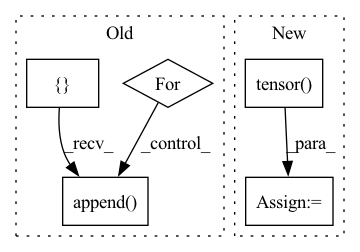

Pattern ID :41993
Before Change
with record_function("(zhg) get cpu chunk indices"):
// //input_id / moving chunk size
// move chunk_id_set to CUDA
cpu_chunk_id_list = []
for chunk_id in chunk_id_set:
if not self._chunk_in_cuda(chunk_id):
cpu_chunk_id_list.append( chunk_id)
self.num_hits_history.append(len(chunk_id_set) - len(cpu_chunk_id_list))
self.num_miss_history.append(len(cpu_chunk_id_list))
self.num_write_back_history.append(0)After Change
with record_function("(zhg) cache update"):
self._prepare_chunks_on_cuda(cpu_chunk_id_list)
self.evict_backlist = torch.tensor( [], device=chunk_id_set.device, dtype=chunk_id_set.dtype)
// new ids chunk_offset + offset_in_chunk
with record_function("(zhg) embed idx -> cache chunk id"):
mapped_ids = self._id_to_cached_cuda_id(ids).view(ids.shape)
return mapped_idsIn pattern: SUPERPATTERN
Frequency: 4
Non-data size: 5
Instances Fragment ID: 117727760
Project Name: hpcaitech/cachedembedding
Commit Name: 5b9995175361069d8eaa507674a59791f722761a
Time: 2022-07-26
Author: 34452939+zxgx@users.noreply.github.com
File Name: recsys/modules/embeddings/chunk_param_mgr.py
M Class Name: ChunkParamMgr
N Class Name: ChunkParamMgr
M Method Name: prepare_ids(2)
N Method Name: prepare_ids(2)
M Parent Class: object
N Parent Class: object
M File Name: recsys/modules/embeddings/chunk_param_mgr.py
N File Name: recsys/modules/embeddings/chunk_param_mgr.py
M Start Line: 167
M End Line: 195
N Start Line: 155
N End Line: 178
Before Change
def compute_gradient(self, state_lst, action_lst, reward_lst, next_state_lst, done_lst):
final_state = torch.tensor(next_state_lst[-1], dtype=torch.float)
R = 0.0 if done_lst[-1] else self.v(final_state).item()
td_target_lst = []
for reward in reward_lst[::-1]:
R = self.args["gamma"] * R + reward
td_target_lst.append( [R])
td_target_lst.reverse()
state_batch, action_batch, td_target = torch.tensor(state_lst, dtype=torch.float), torch.tensor(action_lst), \
torch.tensor(td_target_lst)After Change
action = torch.tensor(action_lst)
reward = torch.tensor(reward_lst, dtype = torch.float).unsqueeze(-1)
next_state = torch.tensor(next_state_lst, dtype = torch.float)
done = torch.tensor( done_lst, dtype = torch.float) .unsqueeze(-1)
td = reward + (1 - done) * self.args["gamma"] * self.v(next_state)
if self.args["advantage"] == True : Fragment ID: 117727757
Project Name: seolhokim/distributedrl-pytorch-ray
Commit Name: 24173b188cfefde68f9b724d2c24ac5c6cbd722a
Time: 2021-06-05
Author: kilmya1@naver.com
File Name: agents/algorithms/actor_critic.py
M Class Name: ActorCritic
N Class Name: ActorCritic
M Method Name: compute_gradient(6)
N Method Name: compute_gradient(6)
M Parent Class: nn.Module
N Parent Class: nn.Module
M File Name: agents/algorithms/actor_critic.py
N File Name: agents/algorithms/actor_critic.py
M Start Line: 35
M End Line: 47
N Start Line: 31
N End Line: 39
Before Change
wav_lens = [mel_len * self.hop_len for mel_len in mel_lens]
max_mel_len = max(mel_lens)
mel_embs = []
for mel in mels:
mel = mel.unsqueeze(0)
mel_emb, _ = self.mel_rnn(mel)
mel_emb = mel_emb.squeeze(0)
mel_embs.append( mel_emb)
mel_embs = pad_sequence(
mel_embs, batch_first=True, padding_value=float(self.quant_dim // 2)
)After Change
pad_mels = pad_sequence(mels, batch_first=True)
pack_mels = pack_padded_sequence(
pad_mels, torch.tensor( mel_lens) , batch_first=True, enforce_sorted=False
)
pack_mel_embs, _ = self.mel_rnn(pack_mels)
mel_embs, _ = pad_packed_sequence(pack_mel_embs, batch_first=True)
// mel_embs: (batch, emb_dim, max_mel_len) Fragment ID: 117727758
Project Name: yistlin/universal-vocoder
Commit Name: decd133f652564aab54717a4e8df0316421e35c0
Time: 2020-10-07
Author: yishen992@gmail.com
File Name: models/universal_vocoder.py
M Class Name: UniversalVocoder
N Class Name: UniversalVocoder
M Method Name: generate(2)
N Method Name: generate(2)
M Parent Class: nn.Module
N Parent Class: nn.Module
M File Name: models/universal_vocoder.py
N File Name: models/universal_vocoder.py
M Start Line: 78
M End Line: 108
N Start Line: 77
N End Line: 106